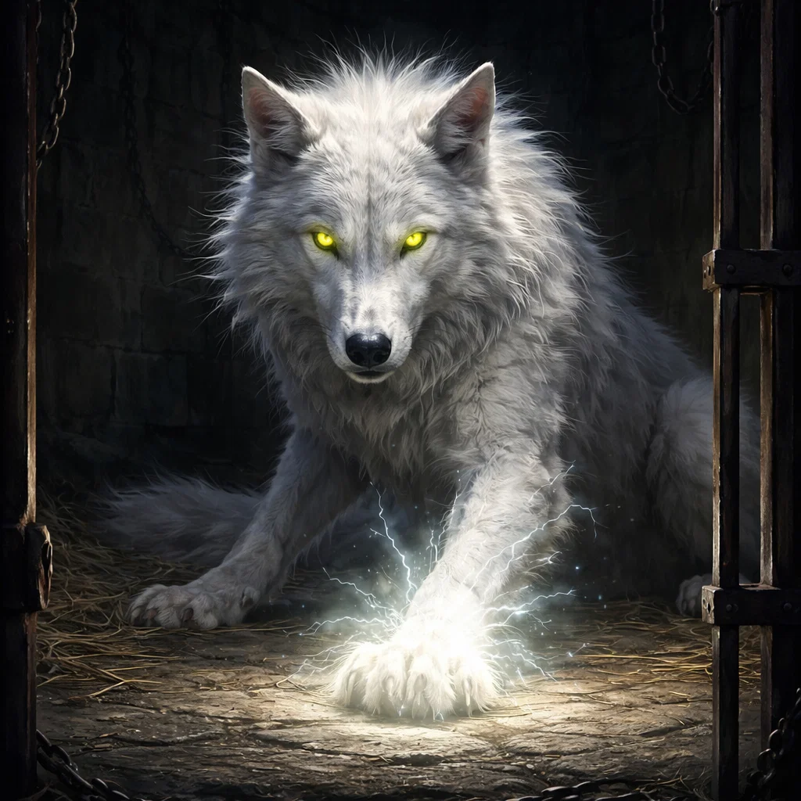
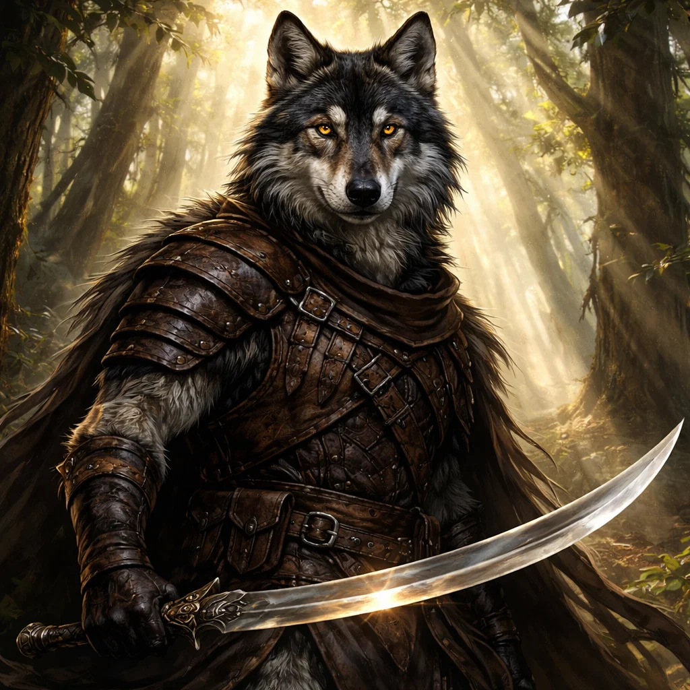
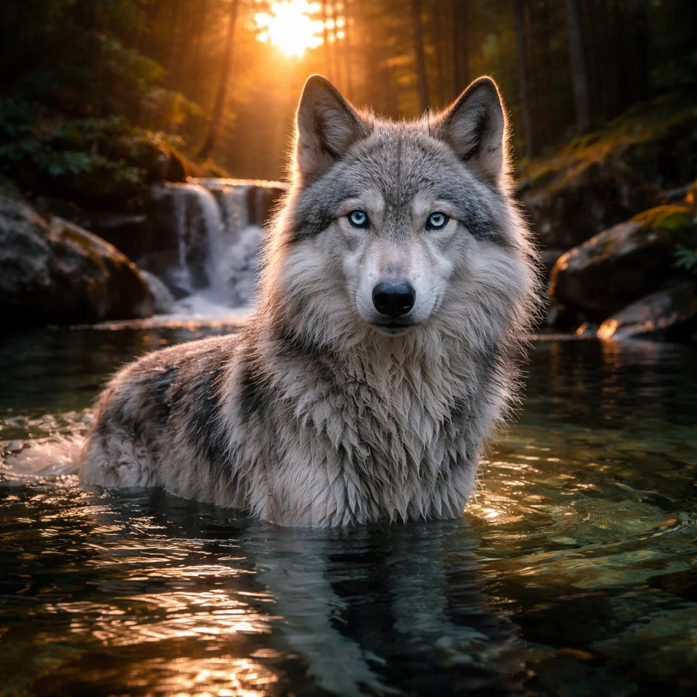
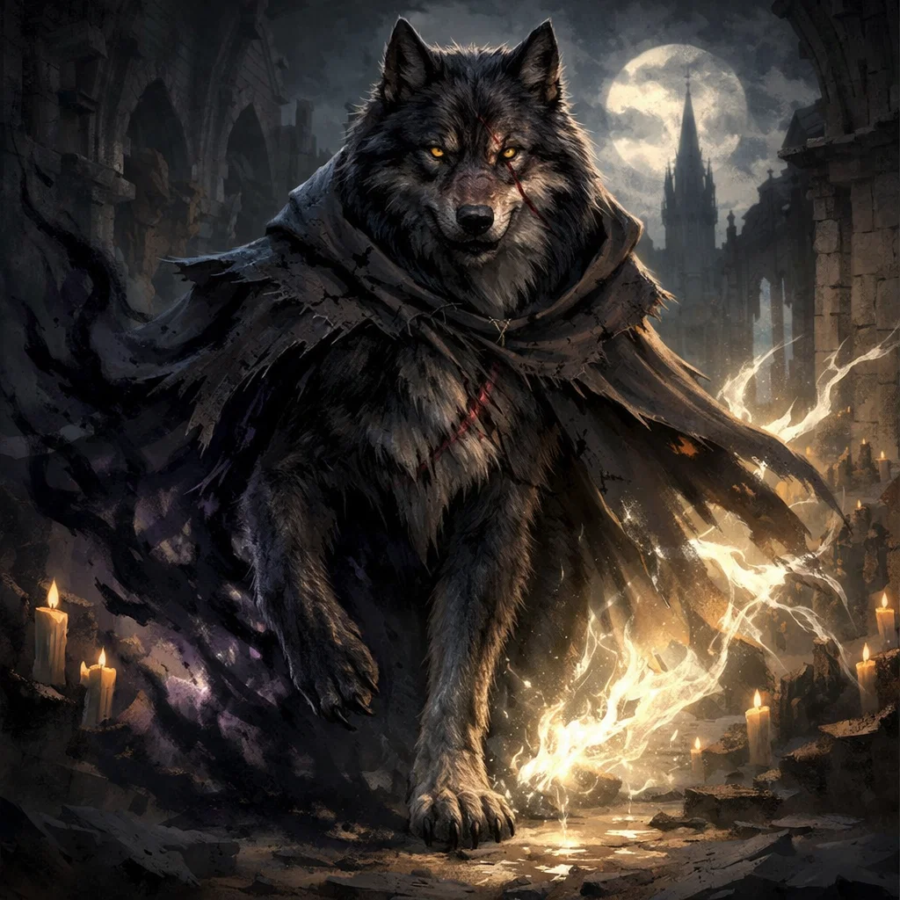
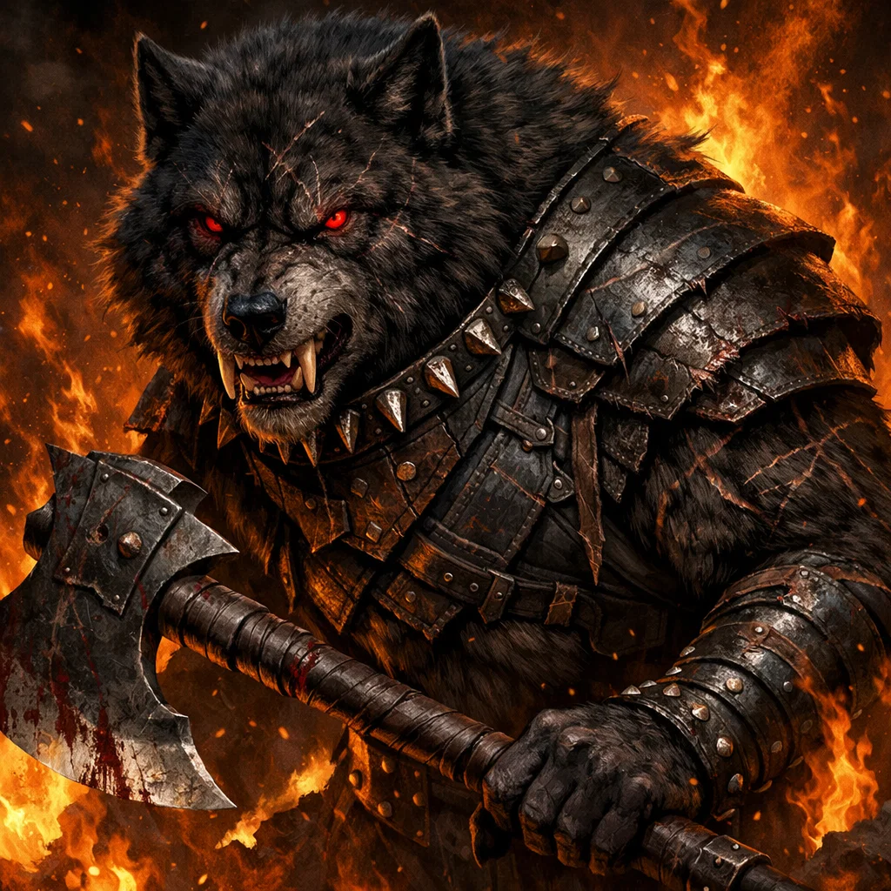
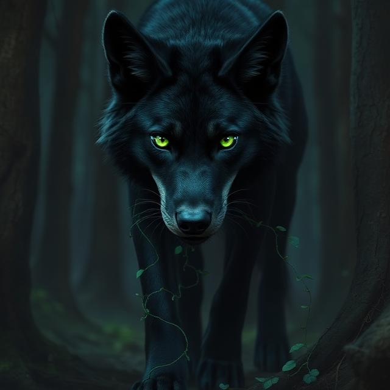
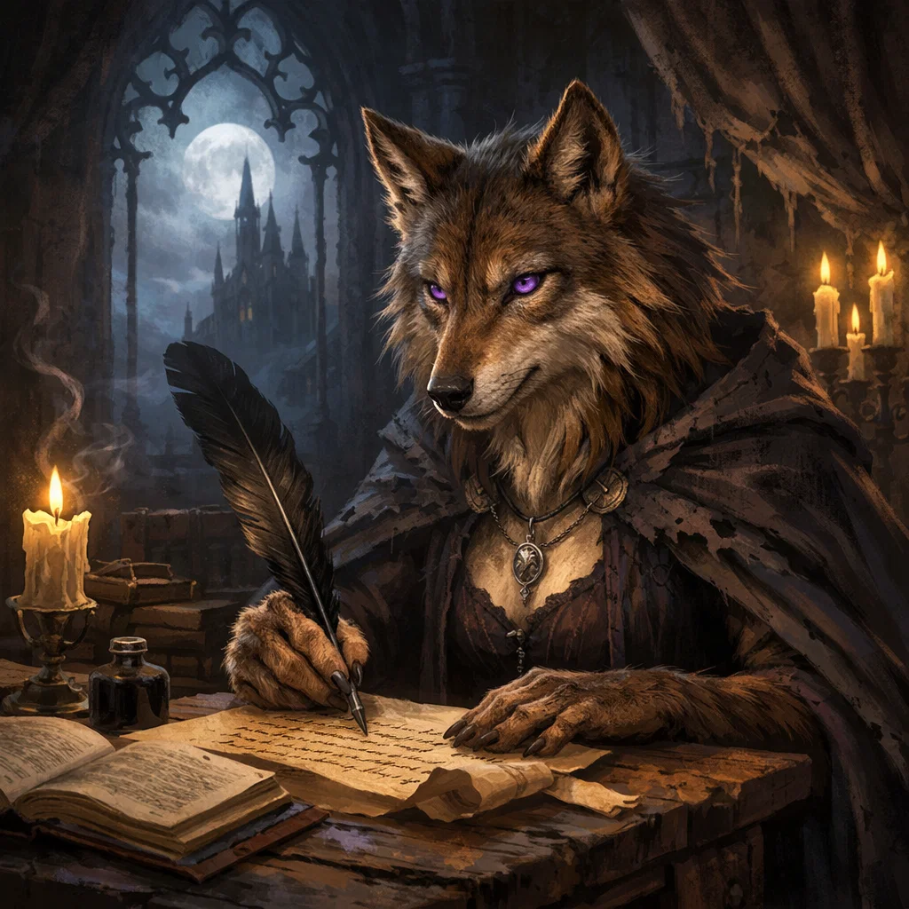
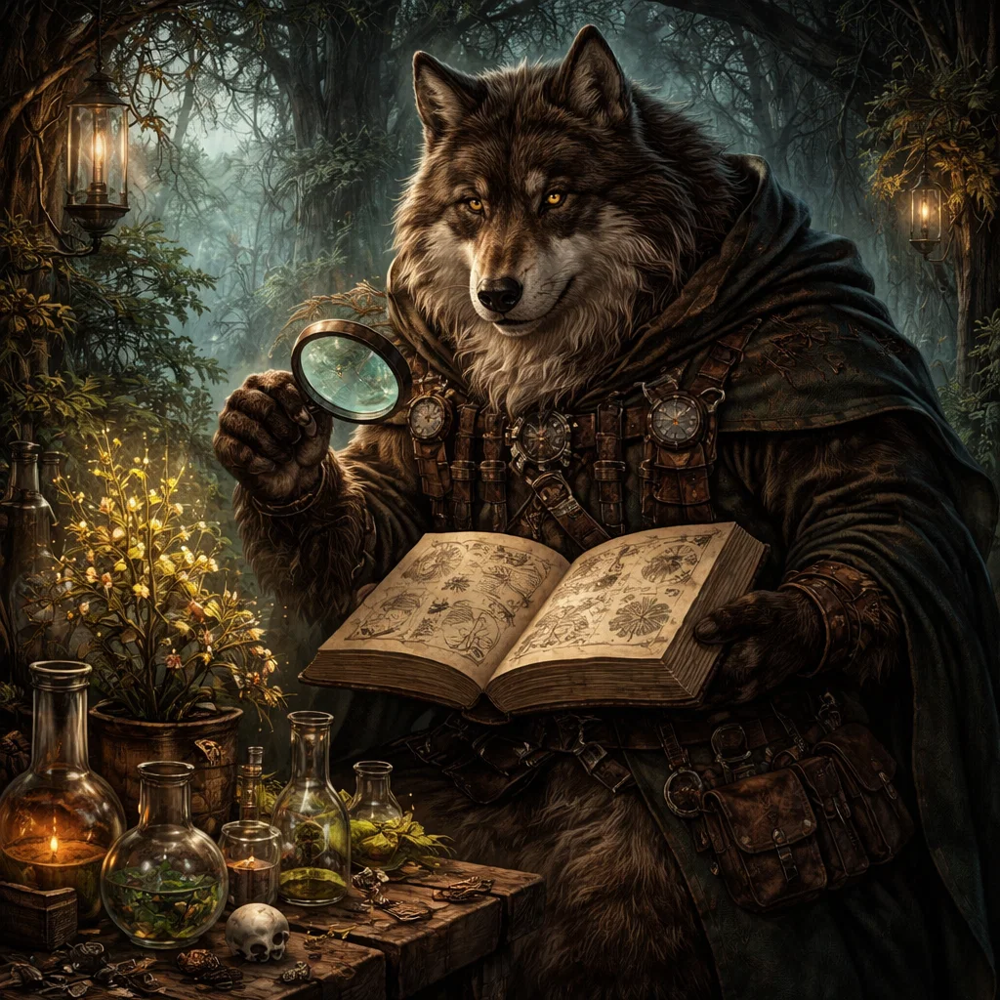
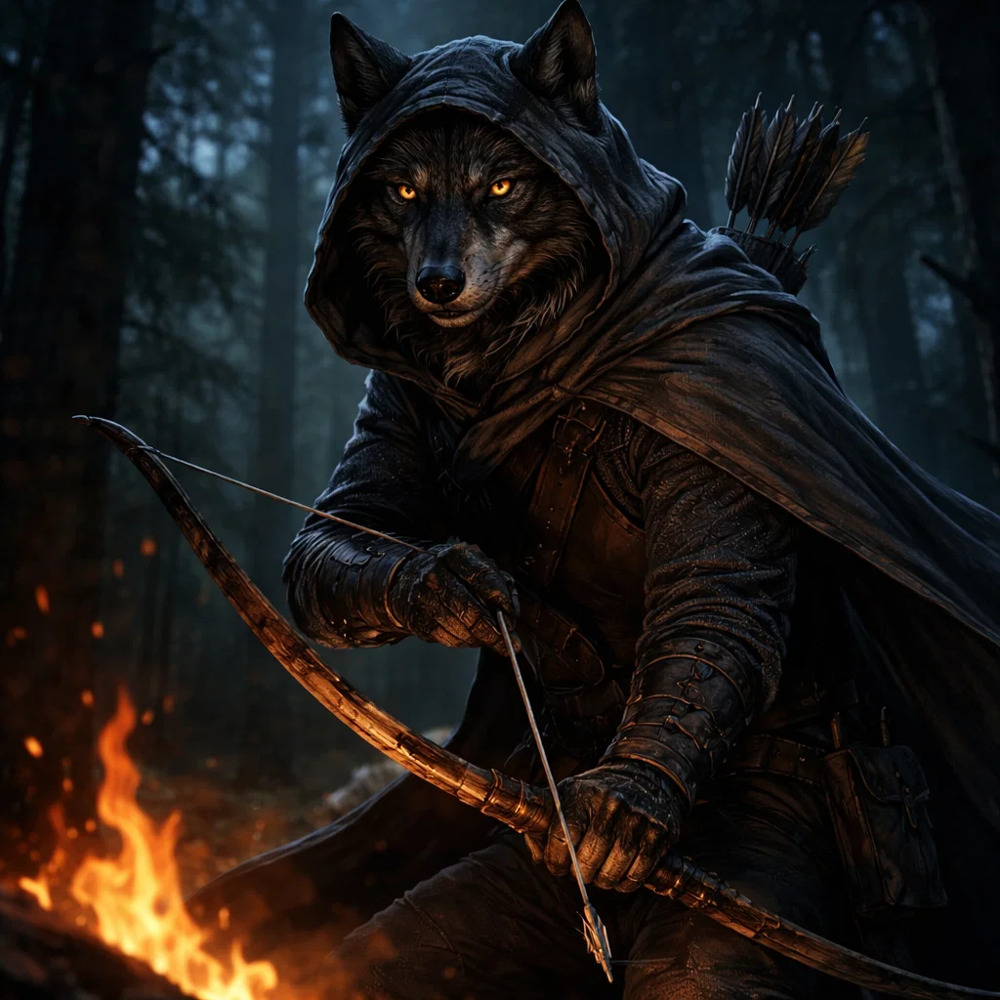
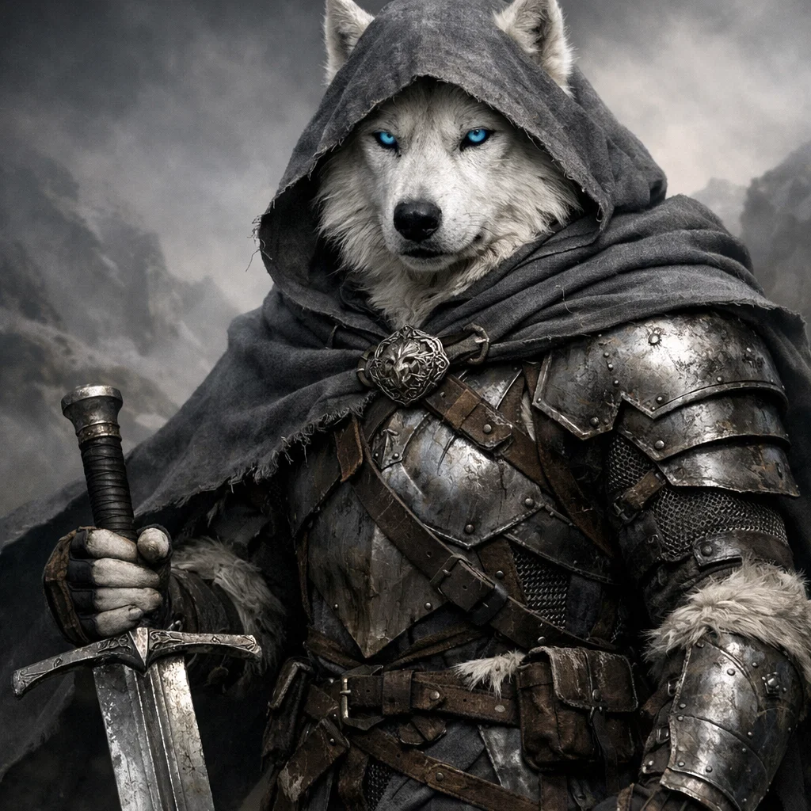

World · The Way
Every wolf walks a path.
Every wolf lives by The Way, whether they follow its teachings, uphold its laws, or choose a path of their own. It shapes the world they inherit, the lives they lead, and the choices that define them.
Yet the world is older than any wolf's understanding of it. Beneath familiar lands and ancient forests, beyond the reach of ordinary sight, lie mysteries that have endured for generations. Some are preserved in stories. Others survive only in dreams, waiting for the day they are remembered.
Here, light and shadow reach beyond the world that can be seen. Every journey leads somewhere unexpected, and every wolf carries more than what the world can see.
This is a world of ancient truths, forgotten histories, and paths that do not always lead where they seem. To understand it, one must first learn The Way.

Stryder
Stryder is a white wolf who has spent much of his life overlooked by his own kind. A follower of The Way, he leaves his home and the family he loves to answer a call he can no longer ignore.
As he journeys into a world far larger than the one he knew, Stryder finds companionship, discovers truths that challenge everything he believes, and begins to understand what it means to follow The Way when all paths lead to Shadow.

Kalyn
Kalyn is a striped black and grey wolf who lost his den to the shadow wolves. A skilled fighter and negotiator, he is the last survivor of his pack and has since become Stryder's closest companion and right hand.
Loyal and decisive, Kalyn helps hold the pack together as they venture into an unfamiliar world. Having lost his first pack, he is determined to protect the one he has found.

Amar
Amar is a silver wolf with sapphire eyes and a longing for a life beyond the walls of her childhood den. When she discovers that the mother she trusted has been keeping her from the world, she leaves home to find the adventure she has always dreamed of.
With a gift for bringing others together, Amar becomes an essential part of the pack. As they venture into unfamiliar lands, she helps open doors that might otherwise remain closed, while finding a place among companions who have become her family.

Lokan
Lokan is a towering, scar-marked wolf with sable fur, amber eyes, and a scent of smoke and spice. A survivor who knows the world's less-traveled paths, he has a knack for finding whatever the pack needs, often through connections best left unexplained.
With Lokan, there is always a price, though it may not be the one you expect. He travels by his own rules, keeps his own counsel, and rarely reveals everything he knows. He offers the pack a way through a world where the usual rules no longer apply.

Vyrex
Vyrex is a massive wolf clad in black hide armor, his scarred body bearing the marks of a lifetime of battle. His fangs are worn with age, yet sharpened by use. Few creatures have faced the monsters he has defeated, and fewer still would willingly stand in his path.
Born and bred for war, Vyrex has spent his life fighting battles few could survive. Now the Champion of Hollowrest, he is a legend forged in blood and steel, feared for the force he brings to the battlefield.

Sylas
Sylas is a sleek black wolf with a grey muzzle and emerald eyes. Wise beyond the measure of most wolves, she has spent her long life learning from the world around her. She knows the language of roots and growing things, and carries an understanding of the natural world few can match.
A natural leader, Sylas guides others with patience and quiet authority. Though she has never had a pack of her own, she knows wolves across the land. When she joins the journey, she brings the wisdom of age and a steady presence to those finding their way through an unfamiliar world.

Wisp
Wisp is a small, brown wolf with violet eyes and an ever-present bundle of scrolls, ink, and quills. Curious and meticulous, she records what others overlook and asks the questions few think to ask. She has learned that every story has more than one side, and she is determined to uncover the whole truth.
Traveling alongside her twin brother, Crag, and the wolves they meet along the way, Wisp seeks answers to questions that reach far beyond the written page. She keeps a record of their journey, determined that no detail, however small, should be lost to time.

Crag
Crag is a large, brown wolf with a keen mind and a talent for understanding how things work. More comfortable studying a problem than joining a game, he has spent much of his life observing, experimenting, and searching for practical solutions. He has a knack for finding uses for things others might discard.
Traveling with his twin sister, Wisp, Crag brings a careful eye and a steady presence to the journey. When others lose their way, he looks for what has gone wrong and how to make it right. Some problems, however, are harder to repair than others.

Reyven
Reyven is a lean, strong wolf with rust and black stripes, sharp features, and eyes that are always searching the distance. Raised in a hunting den, he became an exceptional hunter and marksman, skilled at finding paths and possibilities others overlook. He prefers precision to brute force, and rarely takes a shot without good reason.
An old friend of Thane's, Reyven has known a life shaped by hunting, hard choices, and service under The Order. As the world he once knew falls into shadow, he must find a new path forward, one that offers more than another battle to fight.

Thane
Thane is a white wolf with a strong, battle-trained frame, silver armor, and the bearing of a noble raised to lead. Heir to the throne of Cyndralis, he lost everything after his childhood friend betrayed him. Now he carries his broadsword into a world that has left him with little to call his own.
Trained in the traditions of knighthood, Thane holds fast to honor even as the world around him descends into shadow. With his old friend Reyven at his side, he faces an uncertain future and a past he has yet to reckon with.